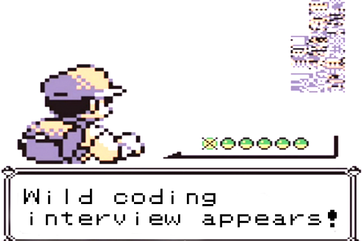

Welcome to Interview Questions section! Here are a compilation of good interview questions to practice with for the future. They range over a wide variety of topics, from linked-lists to graph algorithms to hash tables. Remember, our goal is to help you reach your goals in the realm of computer science and that starts with interview preparation early on.

Contiguous Subarray with Given Sum
Problem: Given an unsorted array/vector of non-negative integers and size n, find the starting and ending indices of the subarray with the given sum, S.
Example: array = {1,2,3,4,5,6,7,8,9,10}, S = 26 --> Output: 4 7 (subarray of 5,6,7,8 sums to 26)
Try solving it before looking at the solution!
Answer: Let's start with the brute force solution: we could generate all possible contiguous subarrays from size 1 to n, summing them up, and checking if that sum equals S. However, this would be extremely inefficient in terms of time complexity, but has a O(1) space complexity (you would need to store the start and ending index). The more efficient way to approach this problem would be to initialize your starting and ending indices to the first element of the array and keep up a running sum. If the sum is less than S, we will increment the ending index by one and add the next element of the array. If the current sum is greater than S, we will increment the starting index by one and subtract the element that was at our starting index before we incremented it. We continue this process until the our current sum equals S, and we can print out the starting and ending indices. This solution takes O(1) space and O(n) time.
Anagram
Problem: Given 2 strings, return whether they are anagrams.
Example: Strings: i am lord voldemort, tom marvolo riddle --> True Strings: hello, lleop --> False
Try solving it before looking at the solution!
Answer: The best way to approach this problem would be to create an unordered_map, with the key as characters and value as integers. We would first loop through the characters of the first string and increment the corresponding count of each character by 1. Once we are done with that, loop through the characters of the second string and decrement the corresponding count of each character by 1. Lastly, loop through this hash table and if any of the values are not 0, then we know it is not an anagram. This solution takes O(n) time and O(n) space.
Finding Middle Element of a Linked List
Problem: Given linked list, find the middle node.
Try solving it before looking at the solution!
Answer: One way to approach this problem would be to start from the beginning of the linked list, count the number of nodes, and then traverse through half of the count you found. This solution is O(n) time and O(1) memory. A more clever way to approach this questions, however, would be to use the runner technique. If we keep a slow and fast pointer, moving fast 2 nodes and slow 1 node at every iteration, then once fast reaches the end of the linked list, slow will be at the middle of the linked list. Once again, this solution is O(1) space and O(n) time.
Rotten Oranges
Problem: Given matrix mxn where each cell in the matrix can have values 0,1, or 2 which has the following meaning: 0: Empty 1: Fresh 2: Rotten
So we have to determine what is the minimum time required so that all the oranges become rotten. A rotten orange at index [i,j] can rot other fresh orange at indexes [i-1,j], [i+1,j], [i,j-1], [i,j+1] (up, down, left and right). If it is impossible to rot every orange then simply return -1.
Try solving it before looking at the solution!
Answer: The main data structure behind this are stacks/queues. For this problem, it is simpler to use a queue and use a breadth-first-search to a certain extent. We first add all the spots originally with a 2 into our queue and set some count to 0. Then pop each element out and add all the neighbors that are a 1, set those spots as checked, and then increment our count. We continue this process until our queue is empty. At the end, we need to check to see if every spot was visited, and if it was not return -1 and if they are, return count. O(n^2) time and O(n^2) space.